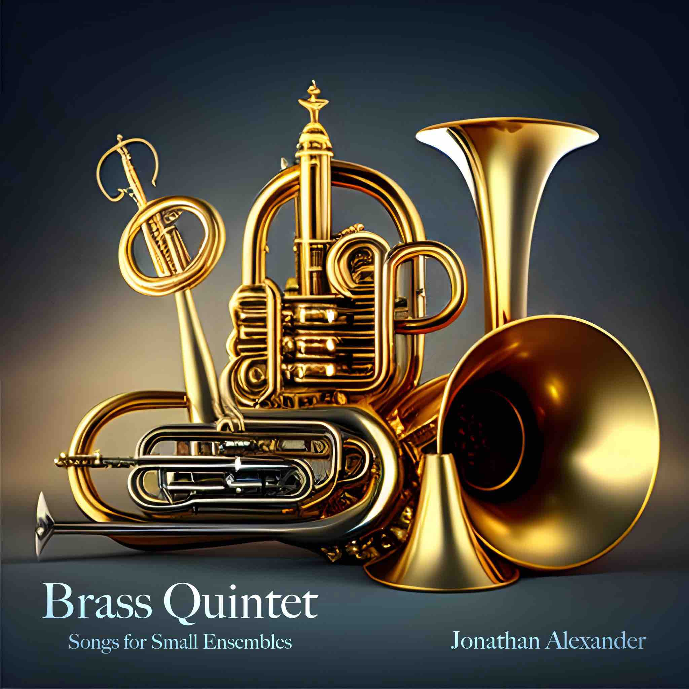
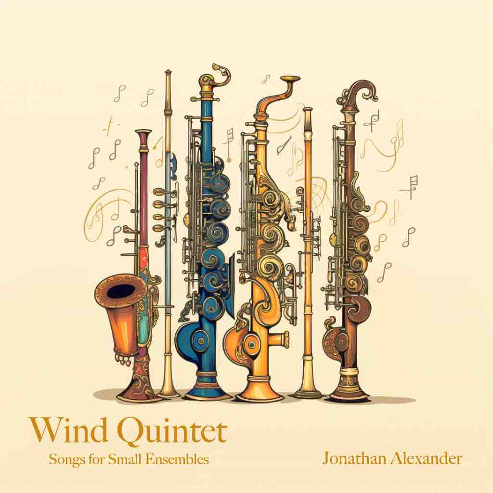
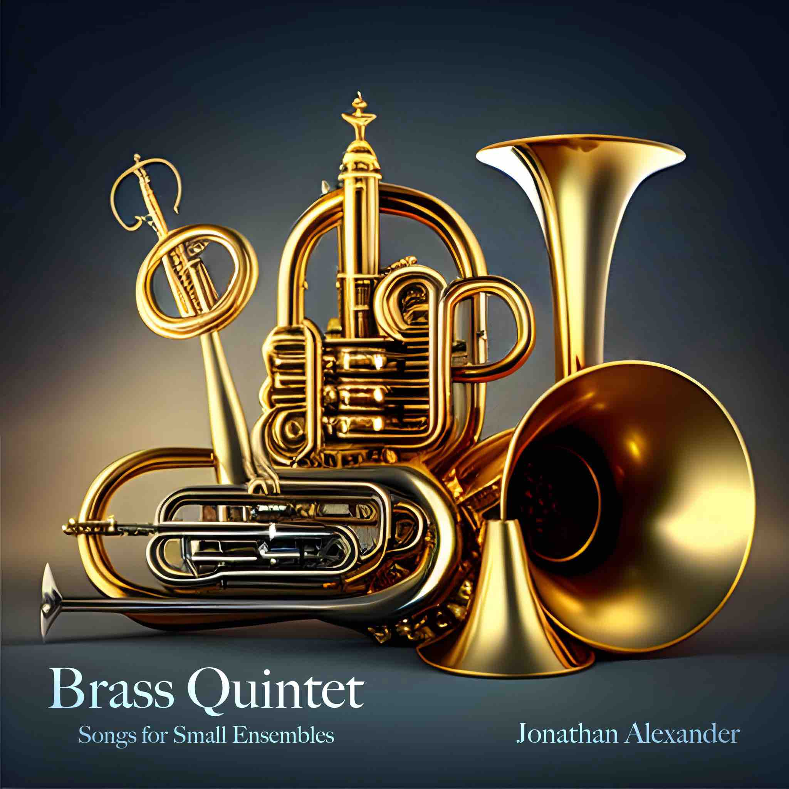
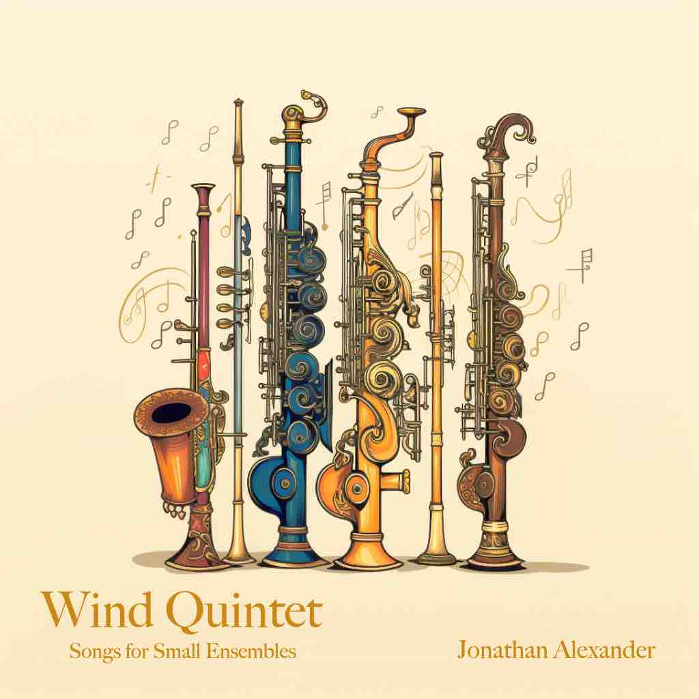

Hi, my name's Jonathan! I'm a Canadian composer, multi-instrumentalist
producer, and classically trained jazz musician of Cantonese and Scottish heritage…
Hi, my name's Jonathan! I'm a Canadian composer, multi-instrumentalist
producer, and classically trained jazz musician of Cantonese and Scottish heritage…
My musical journey began from the age of five, rigorously training in the art of classical piano and
cultivating a keen sense of technicality within the Royal Conservatory of Music. However, during my
rebellious teenage years, my impatience with the rigidity of classical music led me to stumble upon the
improvisatory world of jazz, where the works of Hiromi Uehara, Oscar Peterson, and Chick Corea ultimately
inspired me to explore music beyond western culture. Since then, and especially considering these
influences, multiculturalism has remained a focal point of my musical journey: from learning Japanese
fusion jazz piano to playing finger-style and flamenco guitar; then from learning Chinese erhu to producing
hip-hop beats and mastering digital audio production; all under the aspiration of becoming a musical
polyglot, and proving especially pertinent in my choice to become a composer.
As for composition, my journey began in Vancouver at the University of British Columbia where my discovery
of scoring for interactive media via the Game Dev Club prompted my immediate conversion to studying music
full-time. I eventually settled at the University of Lethbridge where I began formally studying composition.
There, I also continued fuelling my multi-instrumentalist addiction and passion for orchestration by renting
every instrument I could find.
During my studies, I have continued freelance composing for award-winning games and animations while
training in composing concert music under the mentorship of Dr. Arlan N. Schultz.
~lastly, after my forty hours of daily music practice, I enjoy climbing rocks, gymnastically tumbling, and
programming machines to do my bidding. 🧗♀️🤸♀️💻(^-^)
——————————————————————
Performances & Events:
·(2024-03-24) - Graduation Recital - Jonathan
Alexander
·(2024-03-02) - Composers' Recital - University of
Lethbridge


 


